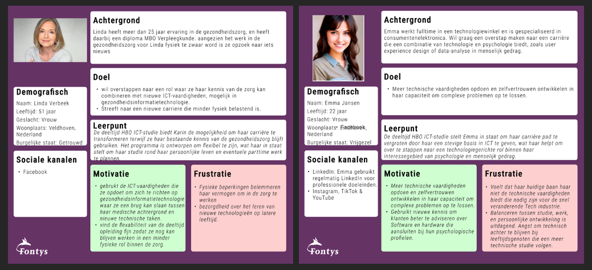
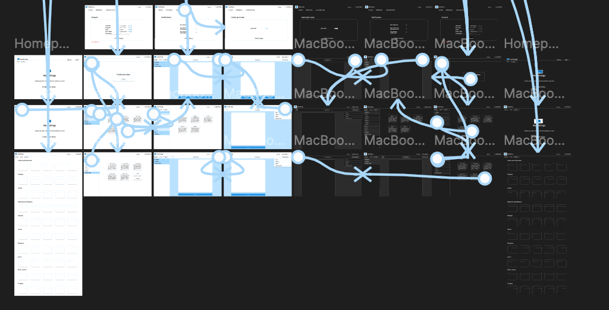

"You orient in the relevant tech, media and design landscape and create interactive media products that you have tested with users and stakeholders."
I made my Figma document clickable. The target of this Figma document was to show how my actual Portfolio website would work before I made it.
I am happy with how my design worked out because it fits me.
I learned how I had to use the scroll function when you clicked a button on Figma, because I didn't know how to use that but I think it fits my website better then going to another page. In the future I will ask more feedback on my work so I can change it faster instead of waiting for my Portfolio review.
here is the link to my Figma
For the second project I made two personas based on interviews we had with ICT Deeltijd, and surveys we sent out to ICT Deeltijd.
You can find the interviews and the surveys at Learning Outcome 4: Professional Standard.

Person one is a 51 year old woman who worked her whole career in the health care, but because it was getting too heavy physically, she wanted to do something else and she was also interested in ICT so she wanted to do that in combination with health care.
Person two is a woman who just started working in a Technology store, and she want to get deeper into the combination of Technology and Psychology.
These two personas are kind of a summary of people who study the ICT deeltijd.
For some extra Media products we could use to attrack more people to the study me and a group mate made a brochure. we worked together on the front page, she made the second page and I made the third and fourth page. Because this study is a Study from Fontys, we wanted to keep it into the guidlines of Fontys OVP to make it as professional as possible. So we used the Style guide of Fontys OVP.

I made a customer journey to understand better how potential and current students of the study deal with the programs and the organisation and how they experience these things. this is also based on the interviews and surveys we did.
I learned how to make a Customer Journey and how to correctly apply the style of something into my own things, and I am proud of how it turned out. I also learned how to make a product out of information I got from interviews.
For the development project we had to make a website for Fontys OVP and I designed a button to press on to make it clear that there was a 2 year study but also a 4 year study, so you can switch easily between these two pages instead of searching again for it on Google.

here is the Survey for the switch button between the two studies.
On this picture you can see on the right middle the navigation button I was talking about. This was my design. I wanted a clear visual button so it was clear for the target audience there is also 2 year study from ICT you can do.
This design was going to be the page before you choose one of the two studies, so you get a choice before. and then when you press one you don't have to go back to look at the other one. we thought that would be handy
On this project our group worked together a lot because we had to make 1 website together. so I learned to communicate a lot with the group about how they wanted things and how the stakeholder wanted things.
For project x I made an interactive Figma design of a writing website I want to make. Based on research I did on Reddit and a survey I made for the target audience I came up with this design.
All information for this design: (Learning Outcome 4: Professional standard)

I learned how much better you can design stuff based on good research you have to do. Normally I just started designing how I liked it, but when you do research first, the first design is going to be much better.